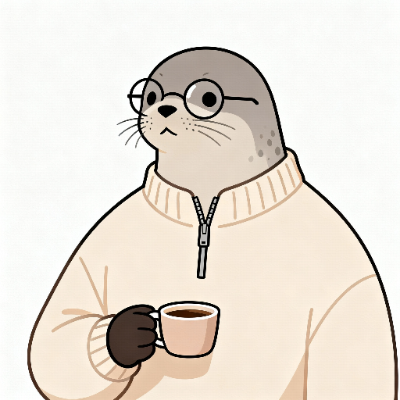

breakOS_
v3.0 — it builds. it breaks. it drags.
▼ scroll to boot ▼
── the ones worth showing ──
6 shipped · the rest run live in System Monitor
every row below is a real repository, fetched live. no curation. the API sees all and forgives nothing.
polling github…
the CLI family — every row is a real repo. one escaped to npm; its version below is fetched live. the rest ship as source.
resolving registry…
7 packages · 0 vulnerabilities · audited by vibes
breakOS terminal. type help if lost. most are.

hi nick,
I scrolled through your entire fake operating system and now I
would like to [ hire you / fund you / argue about tabs vs spaces
].
regards,
a person of taste
⏻ Shut down breakOS?
you've reached the bottom. there is nothing below this. I checked.